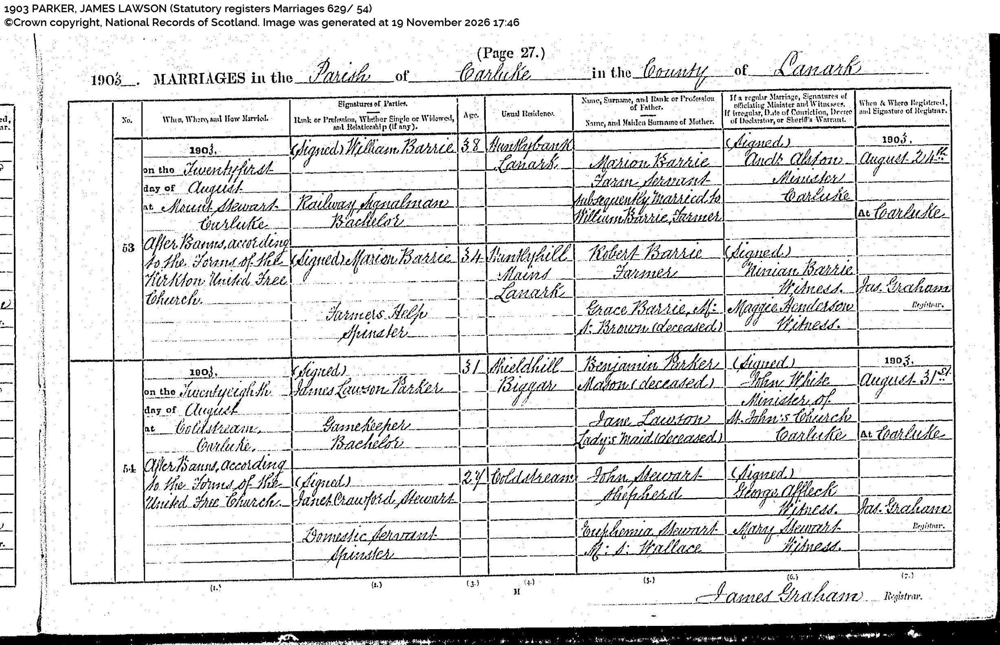

Item 13 · August 28, 1903
Marriage registration: James Lawson Parker and Janet Crawford Stewart
The document

Tap an image to open it full size.
Transcription, word for word
Everything as written, including misspellings. [?] marks an uncertain reading. Struck-through words are marked as struck through. Notes in square brackets describe the page and are not part of it.
[Printed header] 1903 PARKER, JAMES LAWSON (Statutory registers Marriages 629/ 54) [Printed] ©Crown copyright, National Records of Scotland. Image was generated at 19 November 2026 17:46 (Page 27.) 1903. MARRIAGES in the Parish of Carluke in the County of Lanark [Column headings, printed] No. | When, Where, and How Married. | Signatures of Parties. Rank or Profession, Whether Single or Widowed, and Relationship (if any). | Age. | Usual Residence. | Name, Surname, and Rank or Profession of Father. Name, and Maiden Surname of Mother. | If a regular Marriage, Signatures of officiating Minister and Witnesses. If irregular, Date of Conviction, Decree of Declarator, or Sheriff's Warrant. | When & Where Registered, and Signature of Registrar. No. 53 When/where/how: 1903. on the Twentyfirst day of August at Mount Stewart Carluke After Banns, according to the Forms of the Kirkton United Free Church. Parties: (Signed) William Barrie, Railway Signalman, Bachelor, 38, Huntlybank Lanark. (Signed) Marion Barrie, Farmers Help, Spinster, 34, Huntlyhill Mains Lanark Fathers/Mothers: [father's line blank] Marion Barrie Farm Servant subsequently married to William Barrie, Farmer. Robert Barrie Farmer. Grace Barrie, M: S: Brown (deceased) Minister/witnesses: (Signed) Andw Alston Minister Carluke. (Signed) Ninian Barrie Witness. Maggie Henderson Witness. Registered: 1903. August 24th At Carluke Jas. Graham Registrar. No. 54 When/where/how: 1903. on the Twentyeighth day of August at Coldstream, Carluke. After Banns, according to the Forms of the United Free Church. Parties: (Signed) James Lawson Parker, Gamekeeper, Bachelor, 31, Shieldhill Biggar. (Signed) Janet Crawford, Stewart, Domestic Servant, Spinster, 27, Coldstream Fathers/Mothers: Benjamin Parker Mason (deceased). Jane Lawson Lady's Maid (deceased). John Stewart Shepherd. Euphemia Stewart M: S: Wallace Minister/witnesses: (Signed) John White Minister of St. John's Church Carluke. (Signed) George Affleck Witness. Mary Stewart Witness. Registered: 1903. August 31st At Carluke Jas. Graham Registrar. [Signature] James Graham Registrar. [Left edge: part of the facing page, cut off]